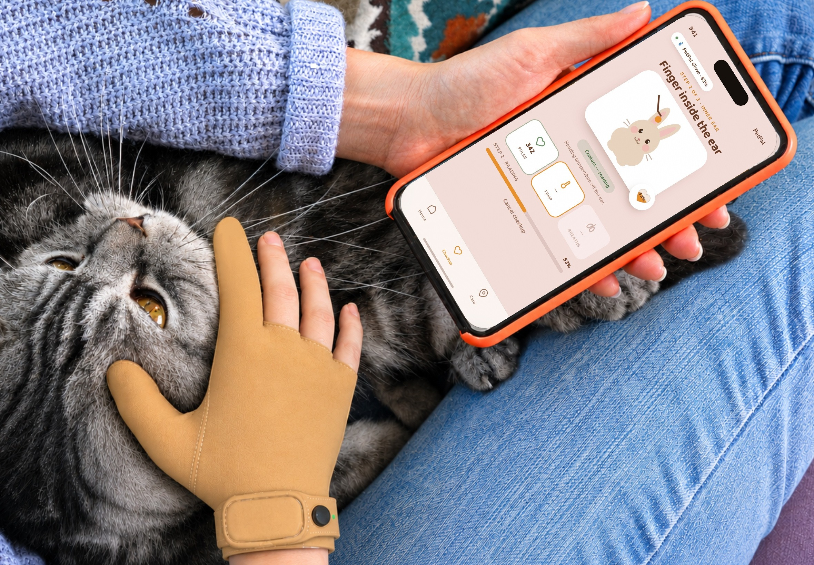
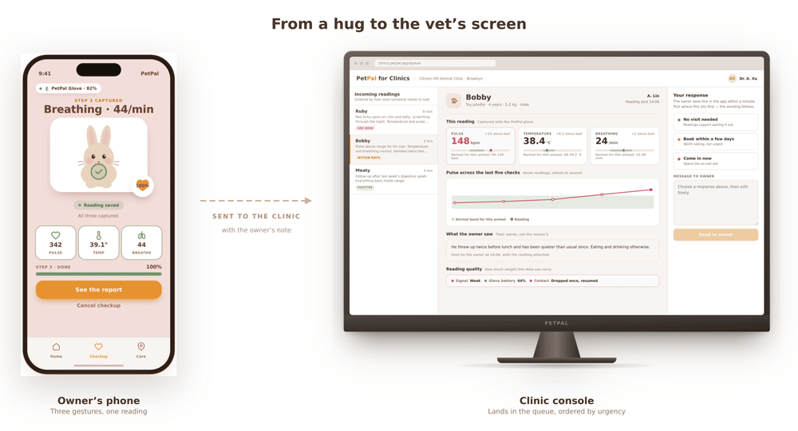
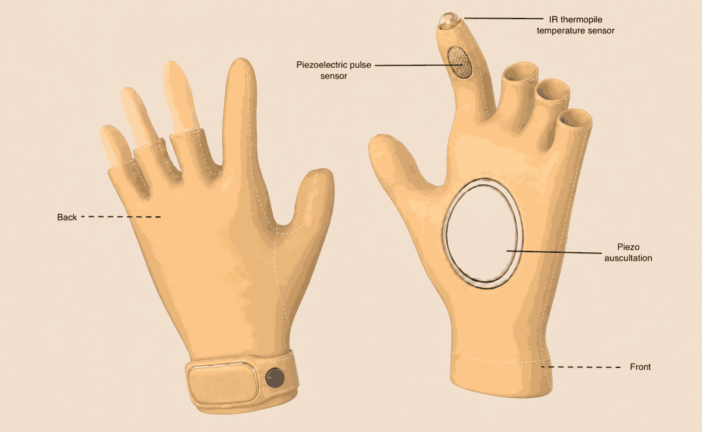
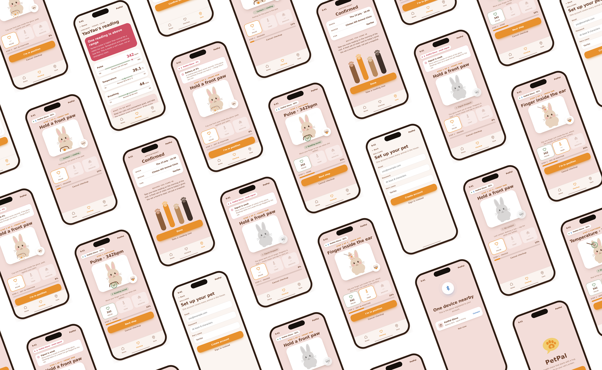

A healthcare device that lets pet owners conduct a pet health consultation from home — transmitting vital signs online and translating consultations, treatment options and prescriptions for owners who don't speak their vet's language.





PetPal is a device that allows users to get a pet's vital signs by hugging the pet and transmit the information to a doctor for a more accurate diagnosis.
Pet owners are very anxious when their pets are sick, however clinics are not always available. It would be very helpful if we could do a simple health check on a pet's situation from home. Some illnesses need tools like a thermometer, blood pressure monitor and heart rate monitor to diagnose.
Luckily, most mammal pets are all pettable on their head, back and the sides of their body — which are also the areas where vital signs are collected. This makes vital signs obtainable at home without facilitation from vets.